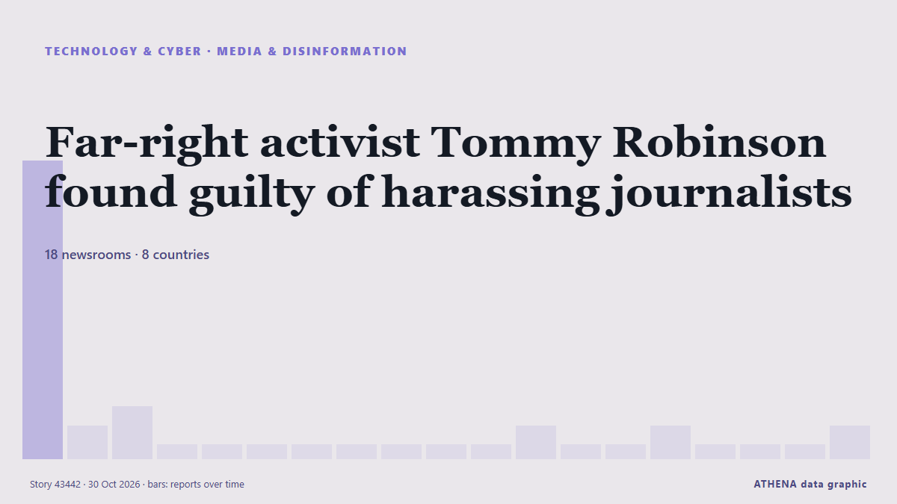

Far-right activist Tommy Robinson found guilty of harassing journalists

Tommy Robinson was charged with two counts of harassment causing fear of violence, relating to messages and calls to two Daily Mail journalists in 2024. من ABC News Australia
نشرته بشكل مستقل 18 مصدرًا في 8 دول منذ 28 أكتوبر، وأول من نشره The Guardian؛ والتغطية تتراجع. يقدّر ATHENA الخطر بأنه منخفض (1.3/10)، ويعود ذلك أساسًا إلى خطورة الضرر الموصوف وجودة الأدلة. الثقة 90٪ (مرتفعة)، وعدد المصادر المستقلة المؤكِّدة: 18، بمتوسط موثوقية للمصادر يبلغ 71٪.
لماذا يهم: تشكّل تطورات التكنولوجيا والأمن السيبراني الأمنَ والمنافسة وقواعد الحياة الرقمية.
ما الذي تغيّر: 3 تقارير جديدة من 3 غرف أخبار خلال 24 ساعة حتى 30 أكتوبر.
العنوان الأول: Tommy Robinson found guilty of harassing two journalists
تُعرض العناوين بالإنجليزية كما نُشرت.
نظرة سريعة
اختير وقُيِّم وكُتب وفق منهجية ATHENA المنشورة. لا يتدخل أي محرر في الأحداث بعينها. كيف يُنتَج ›
| 28 Oct 14:39 UTC | 15 |
|---|---|
| 28 Oct 16:39 UTC | 1 |
| 28 Oct 18:39 UTC | 2 |
| 28 Oct 20:39 UTC | 0 |
| 28 Oct 22:39 UTC | 0 |
| 29 Oct 00:39 UTC | 0 |
| 29 Oct 02:39 UTC | 0 |
| 29 Oct 04:39 UTC | 0 |
| 29 Oct 06:39 UTC | 0 |
| 29 Oct 08:39 UTC | 0 |
| 29 Oct 10:39 UTC | 0 |
| 29 Oct 12:39 UTC | 1 |
| 29 Oct 14:39 UTC | 0 |
| 29 Oct 16:39 UTC | 0 |
| 29 Oct 18:39 UTC | 1 |
| 29 Oct 20:39 UTC | 0 |
| 29 Oct 22:39 UTC | 0 |
| 30 Oct 00:39 UTC | 0 |
| 30 Oct 02:39 UTC | 1 |
| 28 Oct 14:56 UTC | 0.8 |
|---|---|
| 28 Oct 15:49 UTC | 3.2 |
| 28 Oct 19:28 UTC | 3.5 |
| 30 Oct 07:46 UTC | 1.3 |
| 30 Oct 07:46 UTC | 1.3 |
لماذا هذه الأرقام
الأهمية
الخطر
الثقة
التغطية — من نشر الخبر ومتى
العنوان كما نُشر · يفتح الأصل- The Guardian · المملكة المتحدة · United KingdomTommy Robinson faces up to 10 years in jail after being found guilty of harassing journalists
- The Irish News (Belfast) · المملكة المتحدة · United KingdomTommy Robinson could face jail for harassing two Daily Mail journalists
- Belfast Telegraph · المملكة المتحدة · United KingdomTommy Robinson could face jail for harassing two Daily Mail journalists
- Evening Standard (London) · المملكة المتحدة · United KingdomTommy Robinson guilty of harassing Daily Mail journalists
- The New York Times (World) · الولايات المتحدة · United StatesTommy Robinson Found Guilty of Harassing 2 UK Journalists
- Manchester Evening News · المملكة المتحدة · United KingdomFar-right activist Tommy Robinson guilty of harassing journalists in 'retaliation' against Daily Mail
- TheJournal.ie · أيرلندا · IrelandTommy Robinson could face up to 10 years in jail for harassing journalists
- The Herald (Scotland) · المملكة المتحدة · United KingdomTommy Robinson convicted of harassing journalists who feared a ‘vigilante’ attack
- The Straits Times · سنغافورة · SingaporeUK anti-Islam activist Robinson convicted of harassing two journalists
- RTÉ News · أيرلندا · IrelandTommy Robinson found guilty of harassing two journalists
- Anadolu Agency (English) · تركيا · TurkeyUK far-right figure Tommy Robinson found guilty of harassing 2 journalists
- Chronicle Live (Newcastle) · المملكة المتحدة · United KingdomTommy Robinson convicted of harassment after 'I'm coming to get you' threat to reporter
- Belfast Telegraph · المملكة المتحدة · United KingdomTommy Robinson could face up to 10 years in jail for harassing journalists
- Arab News · المملكة العربية السعودية · Saudi ArabiaUK anti-Islam activist Robinson convicted of harassing two journalists
- ABC News Australia · أستراليا · AustraliaFar-right activist Tommy Robinson found guilty of harassing journalists
- ABC News (International) · الولايات المتحدة · United StatesYaxley-Lennon, better known as Tommy Robinson, found guilty of harassing British journalists
- Nation.Cymru · المملكة المتحدة · United KingdomTommy Robinson reposts footage of himself storming Welsh newspaper offices hours before harassment conviction
- The Olive Press · إسبانيا · SpainTommy Robinson faces jail for threatening UK journalists – three years after far-right activist told Olive Press reporters ‘I know where you live’
- Nation.Cymru · المملكة المتحدة · United KingdomBridgend councillor claims Tommy Robinson was ‘treated unfairly’
- Sydney Morning Herald · أستراليا · AustraliaHanson unrepentant over Robinson sit-down in first visit to Secret Harbour